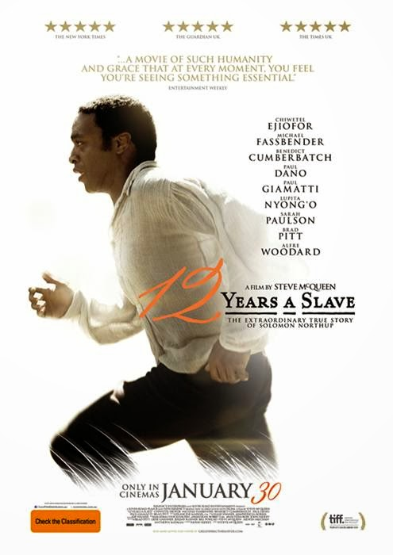
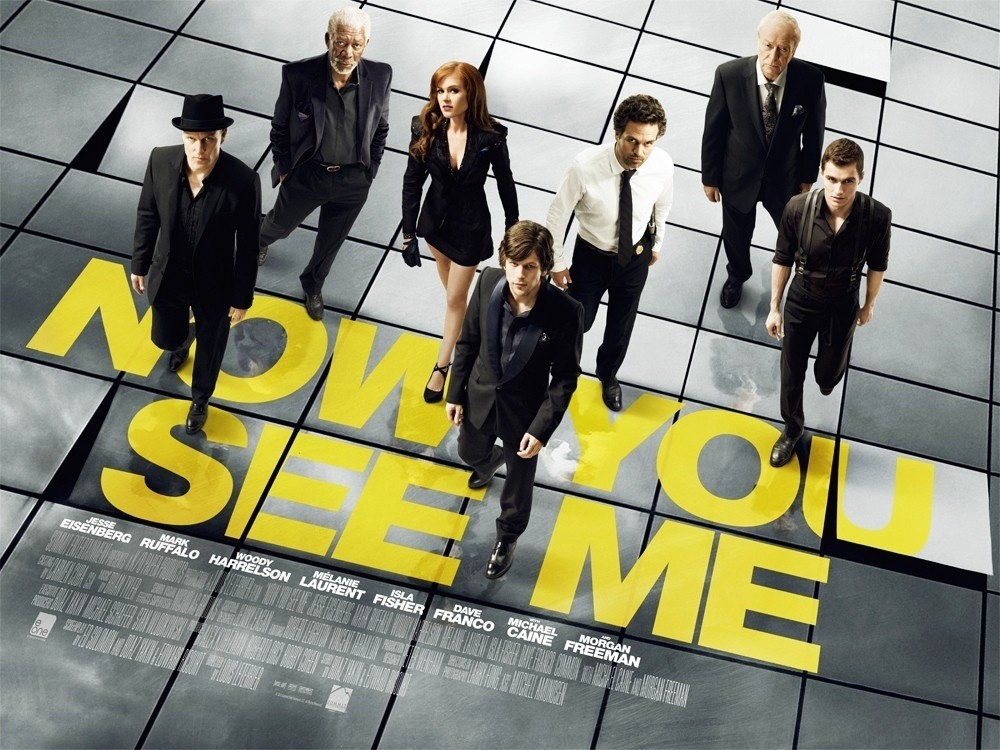

Film Tavsiyeleri..

Fakir bir aileden Wall Street’in kucaðýna düþen Jordan Belfort zekasýný zamanla o kadar iyi kullanýr ki kýsa sürede
milyon dolarla oynamaya baþlar. Ancak hýrsýna yenik düþtüðü her yeni gün milyonlardan da o kadar uzaklaþacaktýr.
Martin Scorsese ustanýn sazý eline aldýðý film, 1988-1996 yýllarý arasýnda hisse senetleri üzerinden köþeyi dönen broker
Belfort‘un gerçek hikayesini anlatýyor.
Belfort’un bizzat yazdýðý ayný adlý kitaptan sinemaya uyarlanan filmin senaryosunu ise HBO’nun son dönem favorisi Boardwalk Empire’ýn yaratýcýsý
Terence Winter
kaleme aldý.
Sinemada veya evde hiç farketmez, bir filmin süresi 180 dakika ise kafalarda mutlaka soru iþareti çýkar.
3 saat boyunca hiç sýkýlmadan beyaz perdeye konsantre olmak ne kadar zorsa, DiCaprio‘nun baþýný çektiði ekip de bunu bir o kadar kolay hale getirmiþ.
Devamýný oku

1993 yýlýndan beri kýsa filmler çeken Steve McQueen ilk ciddi denemesini Hunger ile yapmýþ ve sýnýfý da geçmiþti. O filmdeki uzun mu uzun tek çekim sahneler hala hatýrýmdadýr. 3 yýl sonra Shame ile tekrardan seyirciyle buluþan McQueen, kariyerinin zirvesine 12 Yýllýk Esaret ile çýktý diyebiliriz.
Siyahlarýn köle, beyazlarýn efendi olduðu 19. yüzyýlýn ortalarýnda geçen hikaye Solomon Northup adlý müzisyenin bir anda kendini bulduðu vahþi hayatla start alýyor. Ama ne hayat. Chiwetel Ejiofor‘un baþtan sona götürdüðü filmin senaryosu John Ridley tarafýndan kaleme alýnýrken, Ejiofor’a Michael Fassbender, Lupita Nyong’o, Benedict Cumberbatch, Paul Dano, Paul Giamatti, Sarah Paulson, Brad Pitt ve Alfre Woodard gibi isimler eþlik ediyor.
Devamýný oku

Hollywood son dönemde kendini o kadar çok tekrar etmeye baþladý ki, kendimi biraz olsun uzak tutuyor, çok nadir izliyordum yankeelerin filmlerini. Baþta Kuzey Avrupa olmak üzere Avrupa’nýn dört tarafýnda çok saðlam cevherler de keþfetmedim deðil ancak arada Hollywood’a da bakmak gerekiyor anladýðým kadarýyla. En azýndan Now You See Me beni þaþýrttý bu konuda.
Sokaklarda, vapurlarda, saðda-solda sihirle (veya sömürmeyle) uðraþýp kendi çaplarýnda ekmeklerini çýkartan dört elemanýn 1 sene içinde muazzam bir kariyer sýçramasý yaparak bir anda gündeme oturmasýyla baþlýyor filmimiz. Her birinin kendine has özelliði olsa da hepsinin istediði tek bir þey var aslýnda. Ve bu þey için varlarýný yoklarýný ortaya koymaya hazýrlar.
Devamýný oku